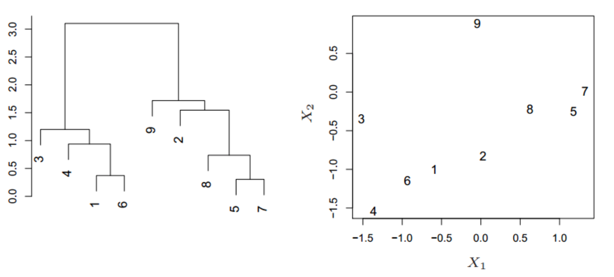

无监督学习
K-Means
简述 K-Means算法的具体步骤 输入是样本集\(D=\{x_1,x_2,...x_m\}\),聚类的簇树k,最大迭代次数N。输出是簇划分\(C=\{C_1,C_2,...C_k\}\) > 1. 数据预处理,如归一化、离群点处理等 > 2.从数据集D中随机选择k个样本作为初始的k个质心向量：\(\{\mu_1,\mu_2,...,\mu_k\}\) > 3. 对于n=1,2,...,N > - 将簇划分C初始化为 \(C_t = \varnothing \;\; t =1,2...k\) > - 计算样本\(x_i\)和各个质心向量\(\mu_j(j=1,2,...k)\)的距离: \(d_{ij} = ||x_i - \mu_j||_2^2\)，将\(x_i\)标记最小的为\(d_{ij}\)所对应的类别\(\lambda_i\), 此时更新 \(C_{\lambda_i} = C_{\lambda_i} \cup \{x_i\}\) > - 对于j=1,2,...,k,对 \(C_j\)中所有的样本点重新计算新的质心\(\mu_j = \frac{1}{|C_j|}\sum\limits_{x \in C_j}x\) > - 如果所有的k个质心向量都没有发生变化，则转到步骤3） > 4. 输出簇划分\(C=\{C_1,C_2,...C_k\}\)
简述K-Means++与 K-Means的区别 > K-Means中k个初始化的质心的位置选择对最后的聚类结果和运行时间都有很大的影响，因此需要选择合适的k个质心。如果仅仅是完全随机的选择，有可能导致算法收敛很慢。K-Means++算法就是对K-Means随机初始化质心的方法的优化。K-Means++的对于初始化质心的优化策略也很简单，如下： > 1. 从输入的数据点集合中随机选择一个点作为第一个聚类中心\(u_1\) > 2. 对于数据集中的每一个点\(x_i\),计算它与已选择的聚类中心中最近聚类中心的距离 \[D(x_i) = arg\;min||x_i- \mu_r||_2^2\;\;r=1,2,...k_{selected}\] > 3. 选择一个新的数据点作为新的聚类中心，选择的原则是：\(D(x)\)较大的点，被选取作为聚类中心的概率较大. > 4. 重复b和c直到选择出k个聚类质心 > 5. 利用这k个质心来作为初始化质心去运行标准的K-Means算法
K-Means均值算法的缺点是什么？ > 1. K值的选取不好把握 > 2. 对于不是凸的或者球形的数据集比较难收敛 > 3. 如果各隐含类别的数据不平衡，比如各隐含类别的数据量严重失衡，或者各隐含类别的方差不同，则聚类效果不佳。 > 4. 采用迭代方法，得到的结果只是局部最优。 > 5. 对噪音和异常点比较的敏感。
如何选取 K-Means 的 K 值？ > K 值的选择一般基于经验和多次试验结果。比如可以采用手肘法，我们可以尝试不同的 K 值，并将不同的 K 值所对应的损失函数画成折线。拐点就是 K 的最佳值。
什么是 Kernel K- Means ? > 还童的欧式距离度量方式，使得 K 均值算法本质上假设了各个数据簇的数据呈现球形或者高维球形，这种分布在实际生活中不常见。面对非凸的数据分布时，引入核函数来进行非线性映射，将输入空间中的数据点映射到高维的特征空间，并在新的特征中空间进行聚类。非线性映射增加了数据点线性可分的概率。
DBSCANS （密度聚类）
https://zhangruochi.com/DBSCAN-Clustering/2020/04/14/
Birch (层次聚类)
- 什么是层次聚类? 层次聚类的步骤是什么？ > 层次聚类不指定具体的簇数，而只关注簇之间的远近，最终会形成一个树形图。
 根据聚类簇之间距离的计算方法的不同，层次聚类算法可以大致分为：单链接（Single-link）算法，全链接算法（complete-link）或均链接算法（average-link）。单链接算法用两个聚类簇中最近的样本距离作为两个簇之间的距离；而全链接使用计算两个聚类簇中最远的样本距离；均链接算法中两个聚类之间的距离由两个簇中所有的样本共同决定。
- 每一个样本点视为一个簇；
- 计算各个簇之间的距离，最近的两个簇聚合成一个新簇；
- 重复以上过程直至最后只有一簇。
Gaussian Mixed Model (概率聚类)
https://zhangruochi.com/Gaussian-Mixed-Model-Introduction/2020/03/15/
- 高斯混合模型的核心思想是什么？它是如何迭代计算的？ > 高斯混合模型假设数据可以看作是从多个高斯分布中生成出来的。求解步骤如下: > 1. E step: 根据当前参数，计算每个点属于各个高斯分布的概率 > 2. M step: 使用上述 E step 求得的概率，计算每个高斯分布的加权平均参数。
聚类算法的评估
- 以聚类算法为例，假设没有外部标签数据，如何评估两个聚类算法的优劣？ > 在无监督的情况下，我们可通过考察簇的分离情况和簇的紧凑情况来评估聚类的效果。 > 1. 轮廓系数：给定一个点p，改点的轮廓系数定义为 \[s(p) = \frac{b(p) - a(p)}{max{a(p), b(p)}}\] > 其中，\(a(p)\)是点\(p\)与同一簇中其他点\(p\prime\)之间的平均距离；\(b(p)\)是点\(p\)与另一不同簇中的点之间的最小平均距离（如果有n个簇，则只计算和点p最接近的一簇中的点与该点的平均距离). \(a(p)\)反应的是\(p\)所属的簇中数据的紧密程度，\(b(p)\)反应的是该簇与其他临近簇的分离程度。显然，\(b(p)\)越大，\(a(p)\)越小，对应的聚类的质量越好。